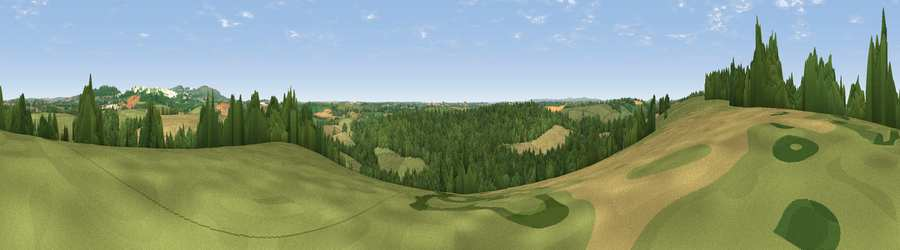

Viewpoint near Ladock
#21994 in England · top 40% of its area beats it · near LadockThe view, rendered

A 360° render of this exact spot computed from the terrain model, tree cover and land cover — summer colours, afternoon light, calibrated against photographs of famous viewpoints. Real trees, hedges and buildings will differ in detail.
The panorama
Grey silhouette: terrain skyline in each direction (720 bearings, Earth curvature and refraction included). Dashed green: skyline with trees (+15 m) and buildings (+8 m) as obstacles. Blue strip: how far the ground is visible on each bearing.
Where the view opens
Wedge length = distance to the farthest visible ground on that bearing (vegetation-aware). Rings at 10, 25 and 50 km.
What fills the view
42% grassland · 33% woodland · 24% cropland · 1% built-up
Angular shares of the visible panorama (visual magnitude), not map area. Landscape diversity 0.50 (0–1 Shannon).
Key numbers
More beautiful places nearby
The staircase of upgrades: each row has a higher view potential than everything closer. Driving times are estimates from straight-line distance, calibrated against real road routing — check an actual route before setting out.
| Place | Direction | Drive | Score |
|---|---|---|---|
| Viewpoint near Trispen | WNW · 2 km | ~5 min | 58.5 |
| Viewpoint near St. Newlyn East | WNW · 3 km | ~7 min | 66.1 |
| Viewpoint near St. Newlyn East | WNW · 4 km | ~9 min | 70.7 |
| Viewpoint near Penhale | NE · 4 km | ~10 min | 81.7 |
| Viewpoint near Foxhole | E · 9 km | ~18 min | 84.3 |
| Viewpoint near Foxhole | E · 9 km | ~18 min | 86.4 |
| Viewpoint near Stenalees | ENE · 13 km | ~23 min | 88.0 |
| Viewpoint near Crackington Haven | NNE · 48 km | ~69 min | 88.1 |
50.33988, -4.97753 · source: screening · position refined by local search. Computed location — check access rights before visiting.